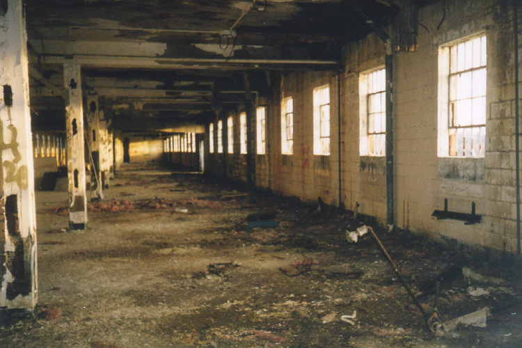
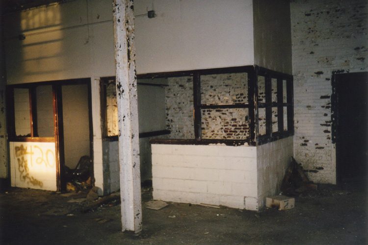
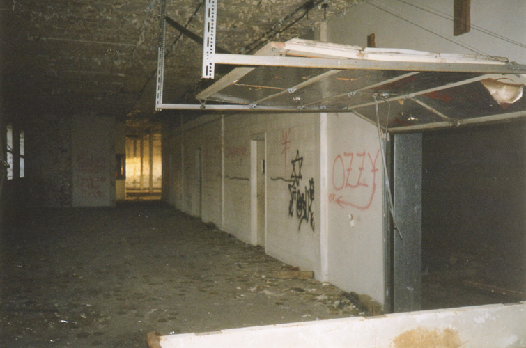
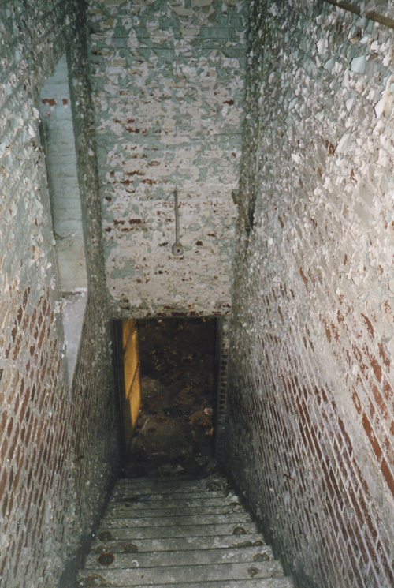

Junction City Prison
Inside

The first thing you notice about the Juntion City Prison is its total lack of cells. As I mentioned earlier, the companies who tried to put the building to use stripped much of the metalwork out. In Brubaker, most of the prisoners were kept in long, dormitory-style rooms. There were solitary confinement cells in the movie, but we didn't come across those either. Actually, almost the whole building was very barren and stripped-down. Nothing but walls, paint chips, and broken glass.

All three floors in the main building are very similar. The second floor--the ground-level floor on the high side--contains a couple of little booths with windows and a long storage room-type thing with cargo doors on tracks.


Also on this floor--and throughout the prison--are hundreds and hundreds of clear plastic disks; lids from containers of olives and pimento and other pizza-related toppings. Leftovers from the pizza place, obviously.

The third floor has a huge hole in the middle of the room which is open down to the level below. Very dangerous if you don't know it's there. My friend Jesus almost fell through it when we dared him to go inside by himself at night.

At the end of the second floor is an open room with a few white shower tiles still glued to the walls. Is this where the prisoners got their showers? Seems possible.
Click below to continue.

CONTINUE...
Back